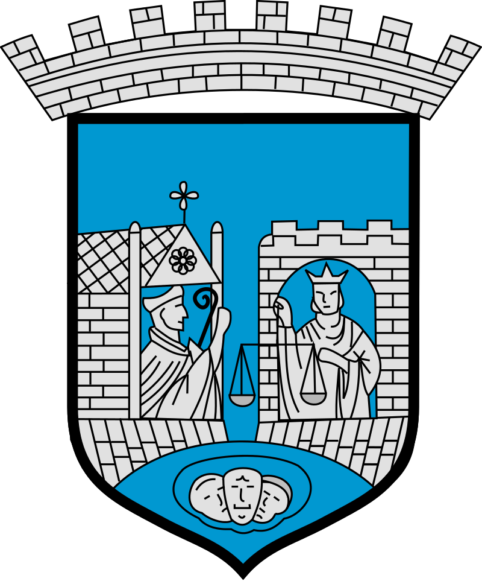

TRONDHEIM
Strona główna
Historia
Turystyka
Dowiedz się więcej
Strona miasta
Wycieczki
Krótka historia miasta
Miasto zostało założone w 996 roku przez Olafa Tryggvasona i do 1217 pełniło rolę stolicy wikińskiej Norwegii. W latach było 1152–1537 siedzibą katolickiej archidiecezji Nidaros.
Co warto zwiedzić w Trondheim?
Norwegia słynie z bardzo wysokich cen i nie jest to żaden mit. Jednak jest wiele miejsc, które najzwyczajniej trzeba zwiedzić.
Ciekawostki dotyczące Trondheim
Gmina w obecnym kształcie istnieje od 1964 roku, kiedy Trondheim zostało połączone z Byneset, Leinstrand, Strinda i Tiller...